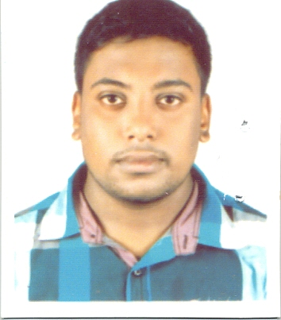

Remsume

Md.Komol Hasan Sajan
Mobile Number:01975590814
E-mail:sajon920@gmail.com
Career Objective:
To start my career with an organization where I could add value to the organization for the mutual success by using my technical knowledge and skills and which will be helpful for me to seek challenging assignment and responsibility with an opportunity for growth and career advancement as a successful achievement.
Self Assessment:
- Strong eagerness for learning.
- CCNA routing switching course is running.
- Having knowledge on computer hardware, software, programming language C,C++,dot-net and HTML.
- Strong verbal and communication skills.
- Problem analysis and solving skills.
- Flexible to work in all conditions.
Academic Qualifications:
| Name of Exam |
Name of Institute |
Group/Sub |
Year |
GPA/CGPA |
| Secondary School Certificate(S.S.C) |
Military Collegiate School Khulna(MCSK) |
Science |
2012 |
5.00 |
| Higher Secondary Certificate(H.S.C) |
Military Collegiate School Khulna(MCSK) |
Science |
2014 |
4.60 |
| Bachelor of Science |
American International University Bangladesh(AIUB) |
CSE |
2015-continue |
|
Interest:
- To learn about the new technology.
- Internet surfing.
Conceptual Knowledge:
- Basic Hardware & Troubleshooting
- Networking (Cabling, Router Configuration, Troubleshooting, Printer sharing, Monitor sharing).
- Doing various project based on course.
Personal Details:
- Father’s Name: Md. Abu Sayeed
- Mother’s Name : Mrs.Halima Sayeed
- Present Address: H#32,road no:8 Nikunja-2 Dhaka, Bangladesh.
- Permanent Address : Chanchra, House no- 436, Thana: Kotwali, District: Jessore.
- Religion : Islam
- Marital Status : Single.
- Blood Group: A (+ve)
- Nationality: Bangladeshi (By Birth)
- Date of Birth: 09th Apr, 1997..
---------------------------
Komol hasan